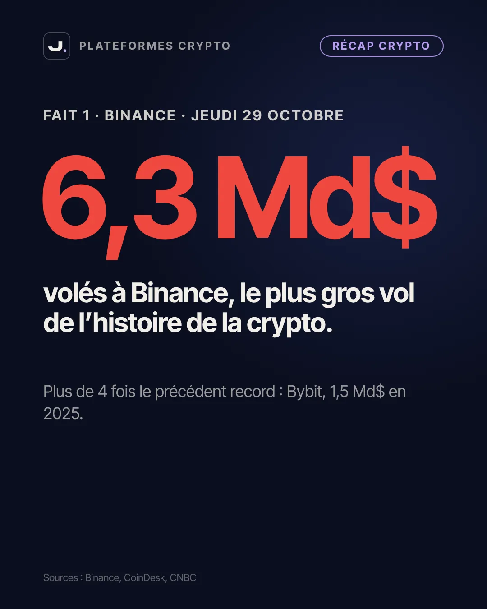
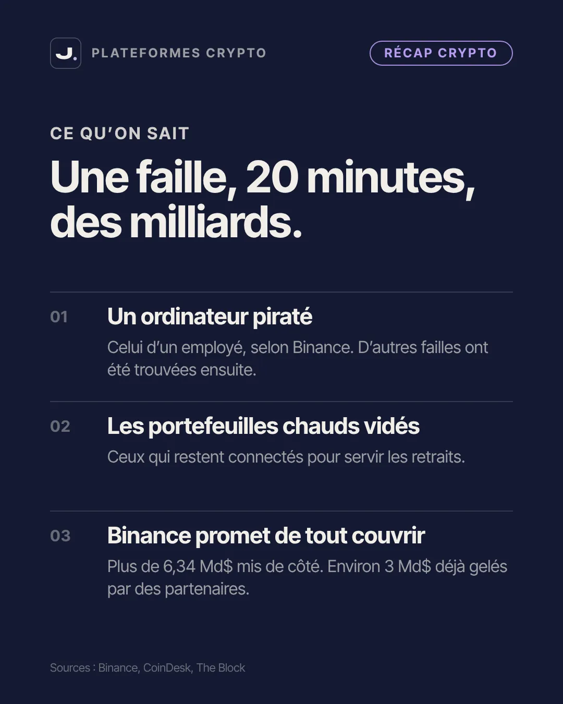
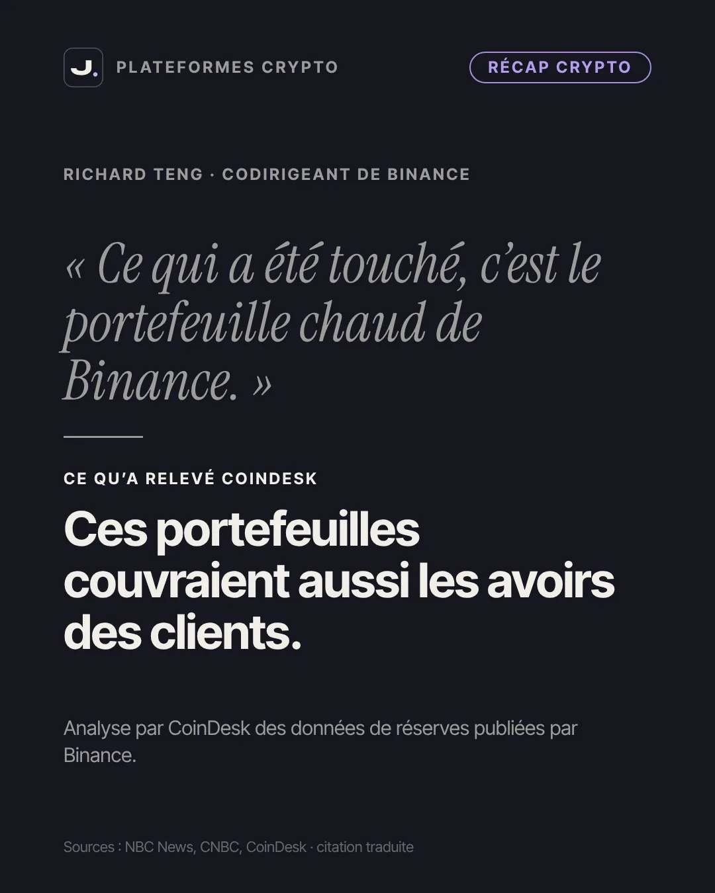
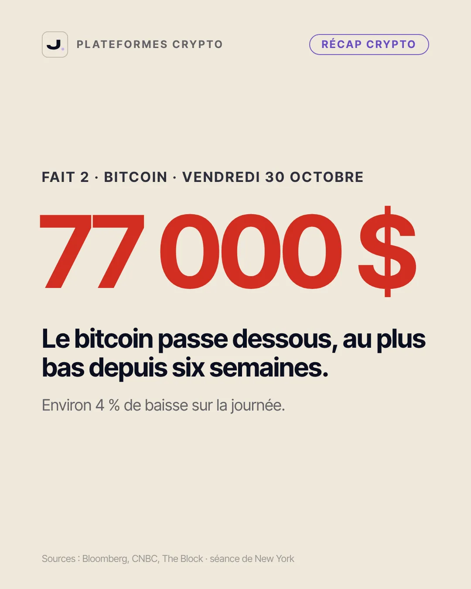
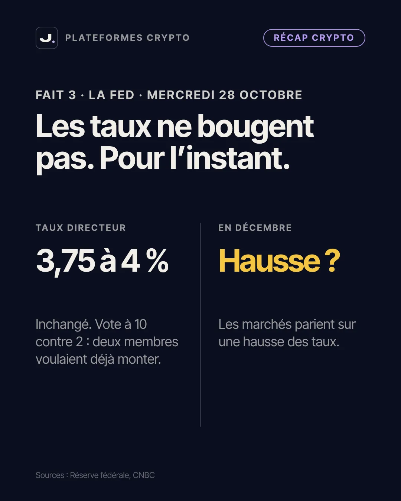
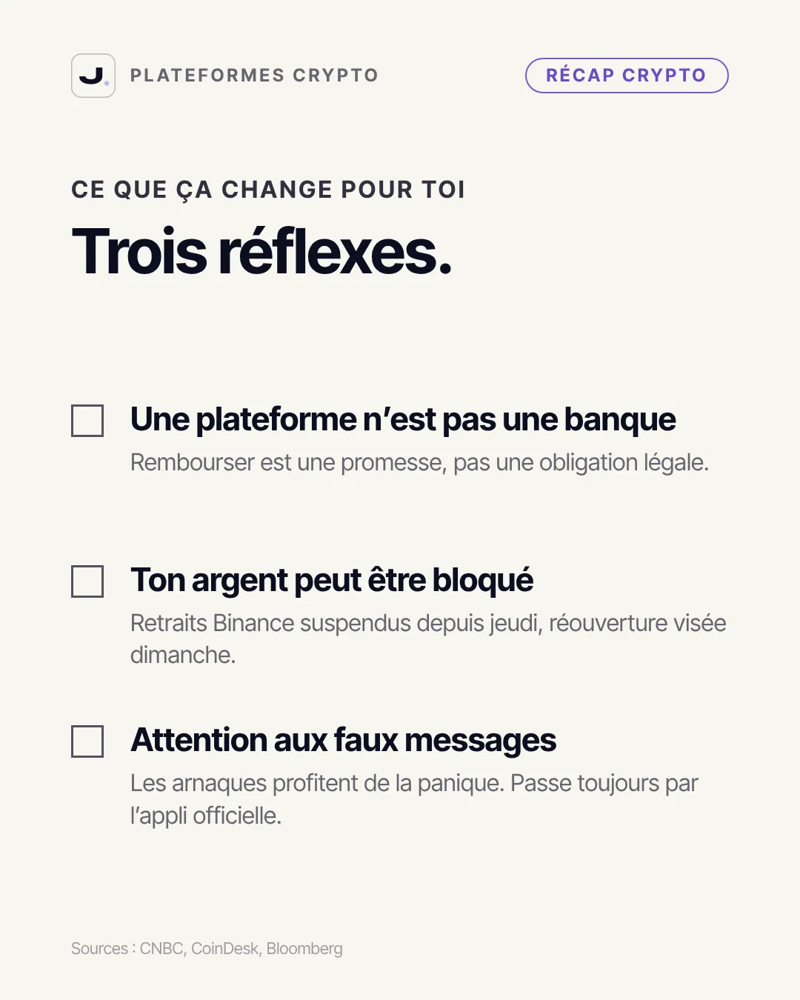
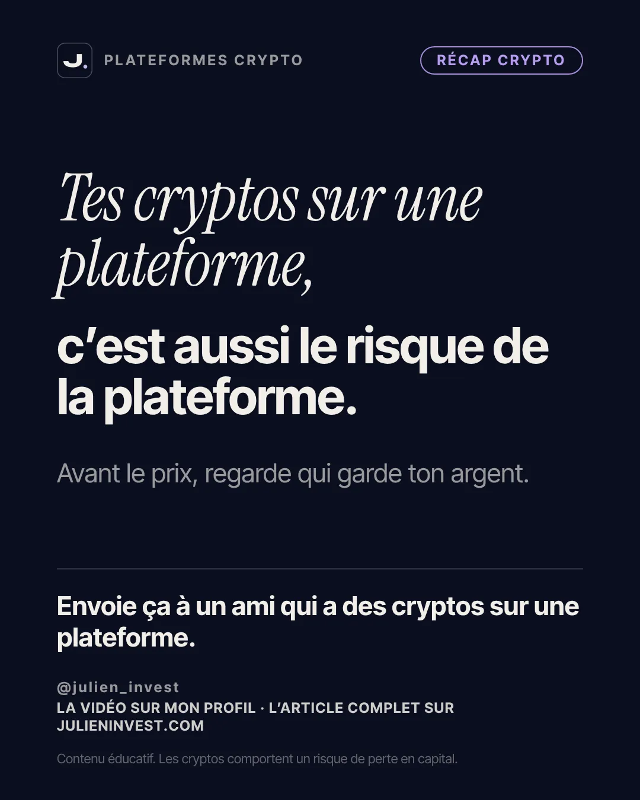

Cet article approfondit mon récap crypto de la semaine. Si tu débutes, commence par mon guide crypto pour débutant : tu y trouveras les bases (ce qu'est une blockchain, un portefeuille, une clé privée) qui rendent la suite beaucoup plus claire.
- Ce qui s'est passé chez Binance le 29 octobre
- Portefeuille chaud, portefeuille froid : la différence en deux minutes
- L'argent des clients touché ou pas : deux versions
- Une promesse de remboursement n'est pas une obligation
- Le reste de la semaine : bitcoin, Fed et Polymarket
- Méthode : vérifier ton exposition au risque plateforme en 15 minutes
- Les erreurs fréquentes après un piratage de plateforme
- Ce qu'on ne sait pas encore
- La leçon de la semaine
- Passer à l'action
- Le carrousel en images
- Questions fréquentes
Ce qui s'est passé chez Binance le 29 octobre
Jeudi 29 octobre 2026, des attaquants ont vidé plusieurs portefeuilles chauds de Binance, sur plusieurs blockchains à la fois. Selon CoinDesk, l'essentiel des fonds est parti en une vingtaine de minutes : du bitcoin, de l'ether, des stablecoins comme l'USDT et l'USDC, et d'autres jetons plus petits. Binance a estimé l'impact total à environ 6,3 milliards de dollars.
Pour te donner l'échelle : le précédent record appartenait à Bybit, une autre plateforme, qui s'était fait voler environ 1,5 milliard de dollars en février 2025. Le vol de Binance est donc plus de quatre fois plus gros. Les médias financiers comme CNBC et CoinDesk le décrivent comme le plus gros vol de crypto jamais enregistré.
Binance a d'abord expliqué que l'attaque était partie de l'ordinateur piraté d'un employé chargé de l'infrastructure, ce qui aurait permis d'envoyer des ordres de retrait non autorisés. Le lendemain, son codirigeant Richard Teng a reconnu que les enquêteurs avaient trouvé d'autres failles. La plateforme affirme n'avoir trouvé aucune preuve que les clés privées de ses portefeuilles aient fuité.
Dans la foulée, Binance a suspendu les retraits. Au moment où j'écris ces lignes, la plateforme dit viser une réouverture le dimanche 1er novembre, mais ce calendrier a déjà bougé plusieurs fois : vérifie la situation sur l'appli officielle avant de te fier à une date.
Portefeuille chaud, portefeuille froid : la différence en deux minutes
Pour comprendre ce vol, il faut comprendre où une plateforme range les cryptos de ses clients. Elle les répartit en général entre deux types de portefeuilles.
- Le portefeuille chaud est connecté à internet en permanence. Il sert à traiter les retraits rapidement, sans intervention humaine. C'est pratique, mais c'est aussi la cible la plus exposée.
- Le portefeuille froid est gardé hors ligne. Les fonds qui y dorment ne peuvent pas partir sans une procédure manuelle, souvent avec plusieurs signatures. C'est beaucoup plus lent, et beaucoup plus sûr.
Une plateforme sérieuse ne garde normalement qu'une partie des avoirs dans ses portefeuilles chauds, juste assez pour servir les retraits du quotidien. Le vol de Binance montre deux choses. D'abord, même une petite partie des avoirs d'un géant représente des milliards. Ensuite, le point faible n'a pas été la cryptographie elle même : ce sont les ordinateurs, les accès et les procédures autour.
C'est un point que j'avais déjà détaillé dans mon article sur comment acheter et sécuriser ses cryptos : la sécurité d'une crypto dépend autant des humains et des logiciels qui l'entourent que de la blockchain.
L'argent des clients touché ou pas : deux versions
C'est la question que tout le monde se pose, et la réponse mérite d'être nuancée.
Ce que dit Binance
Richard Teng a affirmé que l'entreprise n'utilise jamais les fonds de ses clients et que « ce qui a été touché, c'est le portefeuille chaud de Binance ». La plateforme dit avoir mis de côté plus de 6,34 milliards de dollars pour couvrir toutes les pertes. Elle indique aussi qu'environ 3 milliards de dollars ont été gelés par des partenaires, notamment Tether et Circle, les émetteurs des stablecoins USDT et USDC, qui peuvent bloquer leurs jetons quand ils sont identifiés comme volés. Le 31 octobre, selon Binance, 90 % des cryptos volées avaient déjà été remplacées.
Ce qu'a relevé CoinDesk
En analysant les données de réserves publiées par Binance elle même, CoinDesk a constaté que les portefeuilles vidés figuraient dans la liste de ceux qui couvrent les avoirs des clients. Autrement dit, la frontière entre « l'argent de Binance » et « l'argent des clients » est moins nette que ce que suggère la communication officielle. Binance conteste cette lecture.
Ce qu'il faut en retenir
Les deux choses peuvent être vraies en même temps : la plateforme peut avoir les moyens de combler le trou, et les fonds volés peuvent quand même avoir servi de garantie aux avoirs des clients. Pour l'instant, la promesse de remboursement repose sur la solidité financière de Binance. C'est rassurant tant que l'entreprise tient parole, mais ce n'est pas une garantie au sens juridique.
Une promesse de remboursement n'est pas une obligation
Quand ta banque se fait pirater, tu es protégé par un cadre précis : en France, la garantie des dépôts couvre ton compte jusqu'à un certain plafond si la banque fait faillite. Pour une plateforme crypto, ce filet n'existe pas sous la même forme.
Les experts interrogés par CNBC et CoinDesk le rappellent : aux États Unis, aucune loi n'oblige une plateforme à rembourser ses clients après un piratage. Quand Binance promet de tout couvrir, c'est un engagement commercial, pas une obligation légale. Bybit avait tenu sa promesse en 2025. Ce n'est pas le cas de toutes les plateformes dans l'histoire de la crypto, et certaines ont tout simplement disparu après un vol.
En Europe, le règlement MiCA impose désormais des règles aux prestataires agréés, notamment sur la garde des actifs et la séparation entre les fonds des clients et ceux de l'entreprise. Je t'explique ce que ça change dans mon article sur MiCA et la crypto en 2026. Ce cadre réduit certains risques, mais il ne transforme pas une plateforme crypto en banque, et il ne rend pas un piratage impossible.
Il y a aussi un risque plus discret : l'accès. Même si tes cryptos sont intactes sur le papier, tu ne peux rien en faire tant que les retraits sont suspendus. Chez Binance, ils l'étaient depuis jeudi. Si tu avais besoin de cet argent cette semaine, tu ne pouvais pas le récupérer.
Le reste de la semaine : bitcoin, Fed et Polymarket
Le bitcoin sous les 77 000 $
Le vendredi 30 octobre, le bitcoin est passé sous les 77 000 $ pendant la séance américaine, au plus bas depuis environ six semaines selon Bloomberg et Forbes. Il a perdu autour de 4 % sur la journée, d'après CNBC. Le piratage n'est pas la seule explication : les actions technologiques reculaient aussi, et la Fed venait de confirmer une ligne plutôt ferme. Mais l'annonce de Binance a clairement accéléré le mouvement.
La Fed laisse ses taux entre 3,75 et 4 %
Le mercredi 28 octobre, la Réserve fédérale américaine a maintenu son taux directeur entre 3,75 et 4 %. Le vote s'est fait à 10 voix contre 2 : deux membres, Lisa Cook et Beth Hammack, voulaient déjà une hausse. Selon les données de marché citées par CNBC, les investisseurs parient désormais sur une hausse en décembre. Pourquoi ça compte pour la crypto ? Quand les taux montent, les placements sans risque rapportent davantage, et les actifs spéculatifs deviennent souvent moins attractifs. Ce n'est pas une règle mécanique, mais c'est une pression de fond. Pour mieux comprendre ce lien, lis mon article pour comprendre la macroéconomie.
Polymarket coupe ses échanges
Le même jeudi 29 octobre, Polymarket, une plateforme de paris sur des événements, a suspendu ses échanges internationaux après une faille chez un de ses prestataires. Des utilisateurs ont vu leurs fonds retirés sans leur accord. Selon CoinDesk, qui cite DeFi Llama, les pertes tournaient autour de 2,7 millions de dollars, et Polymarket a promis de rembourser. Deux plateformes touchées en vingt quatre heures : le message est le même, le maillon faible est souvent l'infrastructure autour des cryptos.
Méthode : vérifier ton exposition au risque plateforme en 15 minutes
Pas besoin d'être expert pour faire le point. Voici une méthode simple, à refaire une ou deux fois par an.
Étape 1 : liste où sont tes cryptos
Note chaque plateforme et chaque portefeuille personnel que tu utilises, avec le montant approximatif qui s'y trouve. Beaucoup de débutants découvrent à cette étape qu'ils ont tout au même endroit.
Étape 2 : vérifie le statut de chaque plateforme
Regarde si elle est enregistrée ou agréée auprès de l'AMF, et si elle annonce un agrément MiCA. Ces informations sont publiques. Une plateforme qui n'apparaît nulle part dans les listes officielles mérite une méfiance supplémentaire, surtout si elle te propose des rendements très élevés.
Étape 3 : demande toi si tu as besoin d'un accès immédiat
Si cet argent doit servir dans les prochains mois, le risque de retraits bloqués compte davantage pour toi. Une épargne de précaution n'a pas sa place sur une plateforme crypto. Mon article sur le fonds d'urgence t'aide à la dimensionner.
Étape 4 : renforce tes accès
Active la double authentification avec une application plutôt que par SMS, utilise un mot de passe unique pour chaque plateforme et active la liste blanche d'adresses de retrait si ta plateforme le propose. Ces réglages ne protègent pas contre un piratage de la plateforme elle même, mais ils réduisent fortement le risque qu'on vide ton compte personnel.
Étape 5 : décide en connaissance de cause
Garder ses cryptos sur une plateforme a des avantages réels : simplicité, pas de risque de perdre sa phrase de récupération. Les garder dans un portefeuille personnel en a d'autres, mais te rend seul responsable. Il n'y a pas de bonne réponse universelle : l'important est de savoir quel risque tu prends.
Les erreurs fréquentes après un piratage de plateforme
- Cliquer sur un message qui se présente comme Binance. Après chaque piratage, les arnaques se multiplient : faux courriels de remboursement, faux SMS de « vérification », faux supports sur les réseaux sociaux. Passe toujours par l'application officielle, jamais par un lien reçu. Mon article sur les arnaques à l'investissement détaille les techniques les plus courantes.
- Vendre dans la panique. Une baisse de prix liée à une actualité choc ne dit rien de ce que vaudra ta crypto dans plusieurs années. Si tu vends, que ce soit parce que ta situation ou ta stratégie a changé, pas à cause d'un titre alarmant.
- Tout déplacer en urgence vers un portefeuille personnel sans savoir l'utiliser. Perdre sa phrase de récupération ou se tromper d'adresse est irréversible. Si tu passes à l'autocustodie, prends le temps d'apprendre et commence par un petit montant.
- Croire qu'une plateforme trop grosse ne peut pas tomber. La taille aide à absorber un choc, elle ne supprime pas le risque.
Ce qu'on ne sait pas encore
Plusieurs points restent ouverts, et il faut les garder en tête avant de tirer des conclusions définitives.
- Le montant exact. Les 6,3 milliards sont l'estimation de Binance. Les premiers décomptes réalisés sur la blockchain donnaient des chiffres un peu plus bas, et le total peut encore être ajusté.
- Les auteurs. Les sociétés d'analyse TRM Labs et Chainalysis attribuent l'attaque à un groupe lié à la Corée du Nord. Ni Binance ni le gouvernement américain ne l'ont confirmé publiquement à ce stade.
- La preuve des réserves. Binance a publié un premier instantané de ses réserves et annonce une preuve complète, vérifiable par chaque client, dans les jours qui viennent. C'est ce document qui permettra de juger si les avoirs des clients sont bien couverts à 100 %.
- La reprise des retraits. La date visée a déjà changé. Tant que les retraits ne fonctionnent pas normalement, la situation n'est pas réglée.
Cette liste n'a rien d'alarmiste : elle rappelle simplement qu'une actualité de cette taille se lit sur plusieurs semaines, pas en une soirée.
La leçon de la semaine
Quand tu laisses tes cryptos sur une plateforme, tu prends deux risques : celui de la crypto elle même, et celui de la plateforme qui la garde. Le premier se voit tous les jours dans le prix. Le second reste invisible jusqu'au jour où il se réalise. Cette semaine, il s'est réalisé chez le plus gros acteur du marché.
Ça ne veut pas dire qu'il faut fuir les plateformes, ni que la crypto est condamnée. Ça veut dire qu'avant de regarder le prix, il faut savoir qui garde ton argent, sous quelles règles, et ce qui se passe si ça tourne mal. Si tu veux remettre le bitcoin dans un contexte de long terme, lis aussi mon article sur le bitcoin en 2026.
Passer à l'action
Avant de décider quelle place la crypto peut avoir chez toi, commence par connaître ton propre rapport au risque. Mon test gratuit de profil d'investisseur te dit en quelques minutes quel type d'investisseur tu es et quelle part de risque tu peux raisonnablement accepter.
Si tu cherches une plateforme ou un courtier, mon comparateur de courtiers t'aide à comparer les frais, la régulation et les options de sécurité. Certains liens de cette page sont des liens de parrainage : ils peuvent me rapporter une commission sans frais supplémentaires pour toi, et ils ne changent rien à mon analyse. Rappel important : les cryptos comportent un risque de perte en capital, totale ou partielle. N'y place jamais d'argent dont tu pourrais avoir besoin.
Le carrousel en images
Le résumé de cet article en 9 slides, à enregistrer ou à partager.







Un nouveau sujet chaque lundi, vendredi et dimanche : suis la série sur Instagram · TikTok · YouTube.
Questions fréquentes
Combien a été volé à Binance le 29 octobre 2026 ?
Binance a estimé l'impact total à environ 6,3 milliards de dollars, ce qui en fait le plus gros vol de l'histoire de la crypto, plus de quatre fois le précédent record de Bybit (environ 1,5 milliard de dollars en 2025). Le montant exact peut encore être ajusté.
Les clients de Binance vont perdre leur argent ?
Binance affirme que les fonds touchés étaient les siens et promet de couvrir toutes les pertes, avec plus de 6,34 milliards de dollars mis de côté. CoinDesk a toutefois relevé que les portefeuilles vidés figuraient parmi ceux qui couvrent les avoirs des clients. La promesse repose sur la solidité de Binance : ce n'est pas une obligation légale.
Pourquoi je ne peux plus retirer mes cryptos de Binance ?
Binance a suspendu les retraits juste après l'attaque, le temps de sécuriser ses systèmes. La plateforme visait une réouverture le dimanche 1er novembre, mais ce calendrier a déjà changé : vérifie l'information directement dans l'application officielle.
Retirer ses cryptos des plateformes après ce piratage, bonne idée ?
Il n'y a pas de réponse universelle. Un portefeuille personnel supprime le risque de la plateforme mais te rend seul responsable de ta phrase de récupération. L'essentiel est de ne pas tout concentrer au même endroit sans le savoir, de vérifier le statut des plateformes utilisées et de ne jamais agir dans la panique.
C'est le piratage qui a fait baisser le bitcoin ?
En partie. Le bitcoin est passé sous les 77 000 $ le 30 octobre, au plus bas depuis environ six semaines, mais les actions technologiques reculaient aussi et la Fed venait de laisser ses taux inchangés avec deux votes pour une hausse. Le piratage a accéléré un mouvement déjà engagé.
Tu veux la méthode complète, pas juste cet article ?
Reçois mon ebook par email : les erreurs qui coûtent le plus cher quand on débute, et la marche à suivre pour les éviter.
- Binance s'est fait voler environ 6,3 milliards de dollars le 29 octobre 2026, le plus gros vol de l'histoire de la crypto.
- Binance promet de tout couvrir, mais une promesse de remboursement n'est pas une obligation légale.
- Les portefeuilles vidés couvraient aussi les avoirs des clients, selon une analyse de CoinDesk.
- Le bitcoin est passé sous les 77 000 $ le 30 octobre, et la Fed a laissé ses taux entre 3,75 et 4 %.
- Sur une plateforme, tu prends le risque de la crypto et celui de la plateforme qui la garde.
Sources
- CoinDesk, Binance loses over $6 billion in the largest crypto hack to date (29/10/2026)
- CNBC, $6.3 billion Binance hack is largest crypto theft on record (29/10/2026)
- The Block, Binance says it has $6.34 billion ready to cover hack losses (30/10/2026)
- CoinDesk, Binance hack drained wallets backing customer assets, reserve data shows (30/10/2026)
- CoinDesk, Binance discovers multiple breach points, eyes Sunday reopening (30/10/2026)
- CoinDesk, Binance says it has replaced 90% of stolen crypto (31/10/2026)
- CNBC, Binance crypto hack: what happens to customer funds on exchanges (30/10/2026)
- Bloomberg, Bitcoin drops below $77,000 as Binance hack shakes crypto (30/10/2026)
- CNBC, Bitcoin, ether price: Binance hack rattles crypto markets (30/10/2026)
- Réserve fédérale, communiqué du FOMC (28/10/2026)
- CoinDesk, Polymarket suspends trading after third-party breach (29/10/2026)
- CNBC, Hackers steal $1.5 billion from exchange Bybit (21/02/2025)
Contenu éducatif, pas un conseil en investissement. Investir comporte un risque de perte en capital ; les performances passées ne préjugent pas des performances futures.
Comprends la crypto avant d'y investir
Mon guide crypto pour débutant t'explique pas à pas comment fonctionne le bitcoin, les risques à connaître et comment sécuriser tes avoirs.
Lire le guide crypto